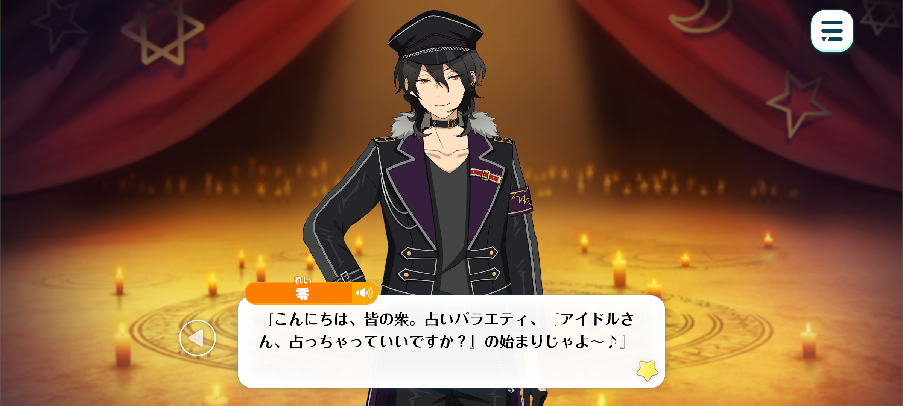
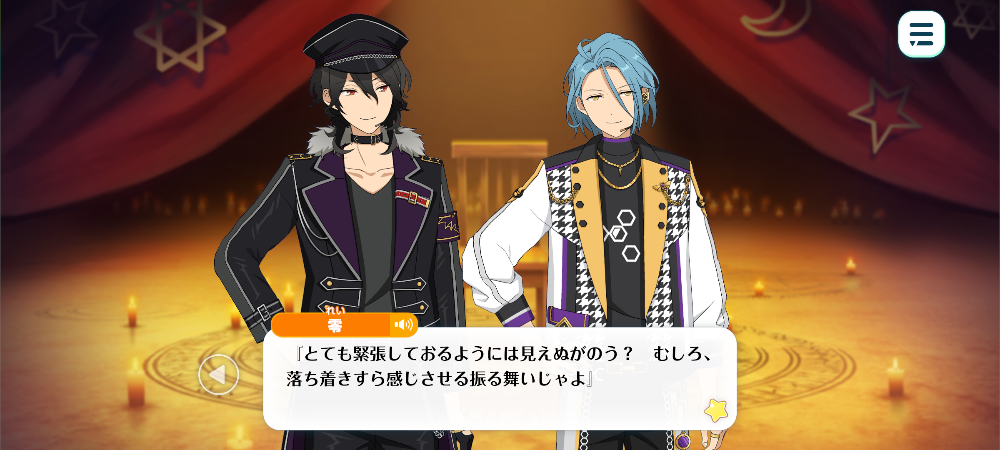
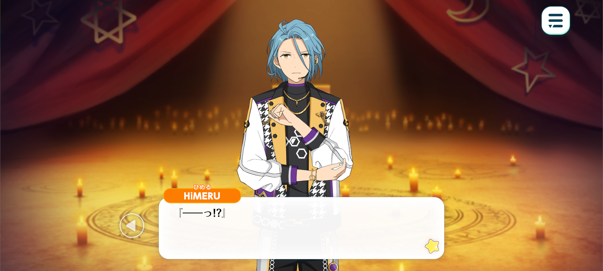

Scout! LUCKY SCRAMBLE
Fortunate Heartthrob – Chapter 1


Season: Winter

Rei: Why, hello there, everyone! Welcome to the fortune-telling variety show, Idol-san, Can I Read Your Fortune?~♪
On this program, we invite idols to our studio and read their fortunes using all manner of techniques passed down through the ages from countries far and wide.
I shall be your host for today. None other than UNDEAD's leader, the Demon King who lures you into the dark of night... Sakuma Rei!
Oh, yes. I imagine some of you may be wondering: just why, pray tell, am I the one hosting this program?
When one thinks of idols who dabble in fortune-telling, surely Sakasaki Natsume-kun is the first to spring to mind, hm? ...And quite rightly so.
However, he already has a fortune-telling program of his own. Alas, one cannot be in two places at once, and so I was asked to take the reins for today's broadcast ♪.
"There are so many differeNT types of fortune-tellING, so I’m looking forwaRD to seeing what kind Rei-niisan will encountER."
Ohhh? Well, aren't those words of encouragement! Though I daresay this isn't quite the place for us to be exchanging insider information.
Now then, let us put the pleasantries aside. Allow me to properly introduce today's program.
As I mentioned earlier, Idol-san, Can I Read Your Fortune? is a show in which we invite popular idols to have their fortunes read.
Of course, what you choose to make of such predictions is entirely up to you...
But the true charm of this program lies in our guests getting to experience all manner of fortune-telling techniques for themselves.
And today's method is something quite unlike anything you've seen before! I'm sure you'll be most eager to witness our guest's reaction ♪.
...And so, on that note! I've kept you all waiting quite long enough. Let us welcome today's guest to the stage!
Please give a warm welcome to Crazy:B's very own HiMERU-kun...☆

HiMERU: Good evening, everyone. This is HiMERU from Cosmic Production.
Just what manner of fortune-telling awaits HiMERU today? And what sort of results will it yield...?
Fufu. Simply contemplating it is enough to make HiMERU feel a little nervous.
Rei: Oh? You don't look particularly nervous to me. If anything, you seem quite composed.
HiMERU: HiMERU is looking forward to having your fortune read. Perhaps that anticipation isn't quite showing on HiMERU's face.
Rei: Hoho! More than anything, you seem positively eager to get started. I feel as though I'm finally getting the hang of this hosting business ♪
Now then, let us at last invite tonight's fortune-teller to join us!
HiMERU: HiMERU understands that both this particular method and the fortune-teller themselves have been eagerly anticipating today's broadcast. Just what sort of individual might they be?
Rei: Well now... That is something you'll simply have to wait and see ♪
HiMERU: Wait and see...?
Rei: And now, without further ado! Please give a warm welcome to Inaba-kun, the white rabbit~!
HiMERU: (Inaba-kun, the white rabbit…?)
Rei: My, my! What an adorable little guest we have joining us today ♪ This is the famous fortune-telling rabbit, Inaba-kun! Let's give him a round of applause~☆
…(Claps as instructed.)
Inaba-kun is a rather popular fortune-telling rabbit who's been causing quite a stir on SNS and video-sharing platforms!
Apparently, those who have their fortunes read by this utterly adorable little bunny are said to be blessed with happiness.
How much he eats, whether his nose twitches, even the way he grooms himself... These are just some of the things Inaba-kun may use to divine your fortune!
And today, we'll be seeing just how close Inaba-kun gets to HiMERU-kun over the course of eight seconds.
HiMERU: Eight seconds…? Excuse HiMERU, but HiMERU fails to see how this constitutes fortune-telling.
Rei: Whaaat? There's no need to be so fearful!
You'll take a seat in the chair at the centre of the studio and wait for Inaba-kun. Then, the door to his cage shall be opened...
And after eight seconds have passed, just how close will Inaba-kun have come to HiMERU-kun? By how much will the distance between you have narrowed...?
The distance between you two will determine the outcome of the fortune-telling! And, incidentally, the closer he gets, the better your luck will be ♪
HiMERU: —HiMERU doesn't entirely understand what's going on, but shall play along for the time being.
So, all HiMERU needs to do is sit in that chair and wait to see how close Inaba-san comes?
Rei: Umu, precisely! ♪ Now then, please make yourself comfortable and wait.
HiMERU: (...Is it just HiMERU's imagination, or has that rabbit been staring rather intently in HiMERU's direction?)
(Animals don't usually take much of a liking to HiMERU, and it's not as though HiMERU has a particularly enticing scent...)
Rei: ...Fumu. It would seem that both HiMERU-kun and Inaba-kun are ready.
But before we begin, there's something I'd like to ask. How are you really feeling at this moment, HiMERU-kun?
HiMERU: —HiMERU never expected to find himself having his fortune told by a rabbit.
Still, HiMERU hopes Inaba-san will come reasonably close. After all, HiMERU would very much like to be blessed with good fortune. He is looking forward to seeing how this turns out.
Rei: Kukuku. And with that...
Open Inaba-kun’s cage!

HiMERU: —GaH!?
(Wait a moment! The cage has only just been opened, and that rabbit is already making a beeline straight for HiMERU!?)
(It's not a question of how close he’ll get anymore! It's how quickly he’s getting here...!)
Rei: My, my! So that's how things are going to be! In less than eight seconds, Inaba-kun has already leapt right onto HiMERU-kun's lap...
What a magnificent jump! And such a splendid landing~!
Even Inaba-kun's owner looks utterly astonished!
HiMERU: (There's a rabbit sitting quite comfortably on HiMERU's lap... What sort of program is this, exactly?)
Ahaha... What an adorable little face you have, Inaba-san.
Rei: ...It would seem Inaba-kun's close-range fortune-telling has yielded some rather unexpected results.
According to his owner, this is the first time Inaba-kun has ever leapt onto someone's lap upon meeting them for the very first time.
In other words, the closer Inaba-kun gets, the better the fortune! Which means HiMERU-kun has just received an extraordinary blessing of good luck...
...The owner's advice is, and I quote, "At the very least, please be prepared for tomorrow."
HiMERU: —Prepared? What sort of good fortune requires one to prepare oneself for it?
Rei: Who can say? Even I cannot begin to imagine what might happen. But isn't that what makes it all the more exciting?
...And with that, it is nearly time to bring today's episode of Idol-san, Can I Read Your Fortune? to a close!
Just what sort of good fortune awaits HiMERU-kun? And is it truly something he must prepare himself for?
I'm afraid you'll have to wait until later to discover the full story...♪
Today's program has been brought to you by Sakuma Rei and Inaba-kun. And...
HiMERU: ...This has been HiMERU. He looks forward to seeing you all again next time.
(—That being said, good fortune isn't something that simply comes along overnight.)
(HiMERU will have to think of something that happens between now and the next episode that he can talk about.)
…(Looks at Inaba-kun in his lap.)
(Speaking of which... Just when, exactly, does this rabbit intend to get off HiMERU's lap...?)